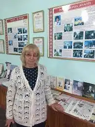
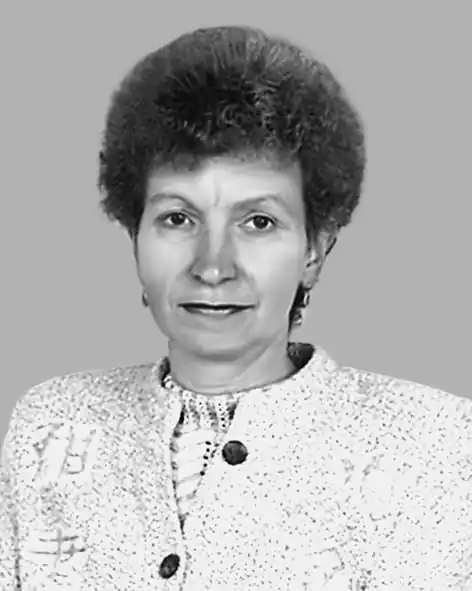

Українська поетеса народилася 24 травня 1955 року в с. Козин, Київ. обл. Член НСПУ (2000). Закінчила Київський університет (1978). Відтоді учителює. 1980–90 рр. секретар виконкому Козинської селищної ради; від 2002 – літературний редактор газети "Українська мова та література".
Друкується від 1970 р. Авторка збірки "Я вас запрошую на каву" (1997), "Вітер серця" (1998), "Наш веселий диво-клас: Вірші для дітей" (2000), "Стеблинка миті" (2003), "Бринить осіння мелодія" (2005), "Перетвори лимон у лимонад" (2006).
Основна тематика творів – любов до рідного краю, дітей, гармонія людини і природи, родинне щастя, кохання.